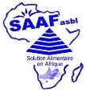

Par le peuple, Pour le peuple
Par le peuple, Pour le peuple
SAAF (Solution Alimentaire en Afrique) dans ses attributions pour l'aide humanitaire, a fourni les efforts par ses propres fonds d'intervenir dans l'agriculture, l'élevage et a résolu les défis liés dans l'encadrement de la population dans les différents groupes qu'il stipule « caisse solidaire » qui réunit au maximum 35 personnes/groupe dont plusieurs femmes sont nombreuses c'est-à-dire 80% des femmes se prennent en charge et 20% d'hommes. Dans cette structure de micro-épargne, la population se trouve dans un état amélioré dans l'auto-prise en charge. Dans la création de l'ONG SAAF, nous avons 150 groupes qui sont actifs actuellement.
Nous pratiquons l'agriculture des céréales locales les soja, les maïs et les haricots en occurrence. Nous avons une exploitation pilote entre temps nous le fesons avec les villageois en distribuant des semences en chaque saison culturelle. b-nous pratiquons l'élevage des petits bétail dont les ports , les chèvres et les poules. En ayant une ferme pilote nous enseignons aussi aux villageois de pratiquer cet élevage et nous leur enseignons les techniques d'élevage. Après sevrage de chaque mise bas nous leur donnons les orientations de servir les autres pour que les bénéfices et les avantages élargissent aux nouveaux bénéficiaires.
La mutuelle de santé encore dans la phase embryonnaire , nous sensibilisons les populations à se prendre en charge dans le domaine de la santé en mettant les moyens ensemble par des cotisations sociales qui aideront à faire asseoir une structure sanitaire communautaire pour faciliter à résoudre des problèmes liés à des maladies .
Nous avons des visions qui sont très capital : Lutter contre le chômage dans le pays en particulier la province du Nord-Kivu;La stabilité de l'économie dans le milieu où nous œuvrons;Avoir une meilleure croissance du point de vue sanitaire; Améliorer et contribuer au développement du pays; Assurer et garantir la santé de la bonne qualité pour la population; Assurer et garantit la paix et la stabilité monétaire dans le secteur de l'agriculture; Intervenir dans le cadre social de la population; Lutter contre la dépendance mais plus tôt avoir l'esprit d'entrepreneuriat, notre mission est d'atteindre nos objectifs cités ci-haut:
Pour y arriver, SAAF a besoin de ce qui suit: